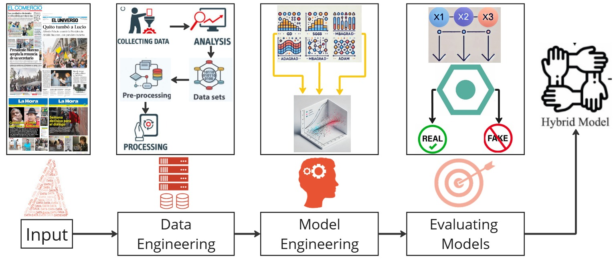

Disponible para proyectos
Full-Stack Dev & Machine Learning
Profesional en Ciencias de la Computación con pasión por crear soluciones donde el código se encuentra con la inteligencia artificial para resolver problemas del mundo real.
Desarrollo del sitio web de Barber Rey, una barbería moderna con identidad elegante y diseño atractivo. La página incluye servicios, galería y sistema de reservas en línea, con diseño totalmente responsive. El objetivo fue fortalecer su presencia digital y mejorar la experiencia de los clientes. El proyecto incluyó: Diseño e implementación del frontend responsive, Sección de servicios y galería dinámica, Optimización para dispositivos móviles, Mejora de experiencia de usuario (UX).
Aplicación web desarrollada con Streamlit que integra procesamiento de visión por computadora para detectar y reconocer dorsales de corredores en imágenes y video en tiempo real. El sistema combina detección basada en OpenCV con técnicas de extracción de texto (OCR si aplica), permitiendo identificar automáticamente el número del corredor a partir del dorsal detectado.
Desarrollo de scripts en Python utilizando el módulo winreg para aplicar configuraciones avanzadas del sistema orientadas a mejorar el rendimiento en Windows 10. El proyecto automatiza ajustes del Registro relacionados con rendimiento, servicios del sistema y configuraciones de usuario, permitiendo aplicar cambios de forma reproducible y controlada.
Desarrollo de una plataforma de comercio electrónico para venta de dispositivos y accesorios de PC, implementando una arquitectura cliente-servidor desacoplada. El frontend fue construido con React.js, consumiendo una API REST desarrollada en Spring Boot. La autenticación se implementó mediante JWT (JSON Web Tokens) con control de acceso basado en roles y generación segura de tokens.
Proyecto centrado en el estudio del impacto de distintos métodos de optimización sobre el desempeño y la convergencia de un modelo de Regresión Logística aplicado a clasificación de noticias políticas. Se realizaron experimentos controlados para comparar algoritmos clásicos y adaptativos, evaluando su comportamiento en términos de convergencia, estabilidad y desempeño en datos no vistos.
Aplicación web que implementa Deformable DETR para detección de objetos en imágenes, integrando un pipeline de modelos de Hugging Face Transformers para traducción automática de etiquetas al español. El sistema permite inferencia en tiempo real desde el navegador, procesando imágenes cargadas por el usuario y mostrando bounding boxes con etiquetas traducidas dinámicamente.
Paper Investigativo
Investigación centrada en mejorar la detección de noticias falsas en español mediante regresión logística optimizada con algoritmos de gradiente — GD, SGD, MBGD, AdaGrad, Adam y RMSProp — para elevar la precisión en clasificación de contenido político.
Leer el paper completo